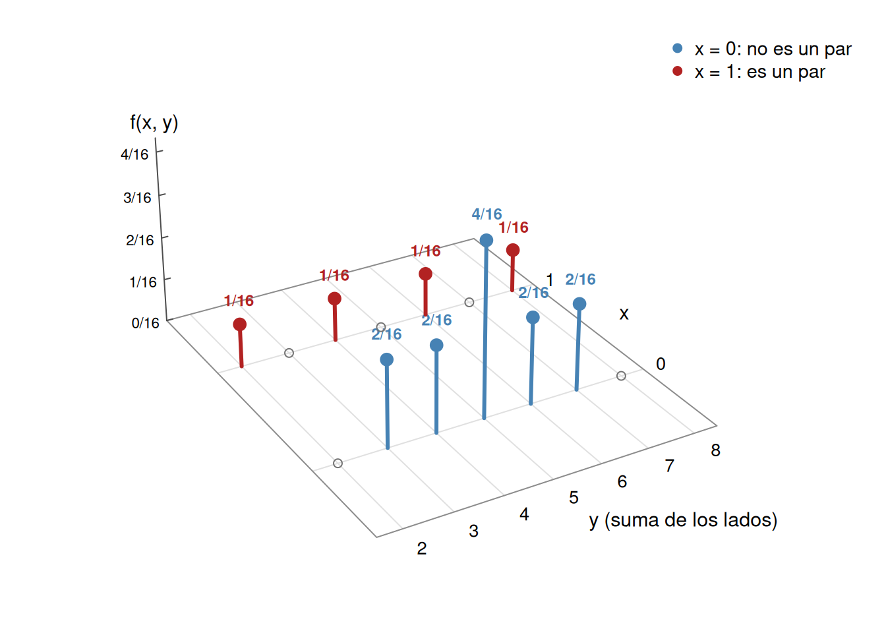

Distribución conjunta, marginales, independencia, covarianza y correlación
Autor
Arturo Sanjuán
Fecha de publicación
3 de noviembre de 2026
Hasta ahora estudiamos una variable aleatoria a la vez. Para lo que sigue necesitamos describir varias variables definidas sobre el mismo experimento y medir cuánto se relacionan entre sí. Esta es la herramienta del capítulo 5 del texto de Blanco.
1 Un ejemplo: dos dados tetraédricos
Se lanzan dos dados tetraédricos, cada uno con caras \(1,2,3,4\). El espacio muestral tiene 16 resultados equiprobables:
Sobre este mismo \(\Omega\) definimos dos variables aleatorias:
\[
Y(i,j)=i+j \quad(\text{la suma de los lados}),\qquad
X(i,j)=\begin{cases}1 & \text{si } i=j \ (\text{sale un par}),\\ 0 & \text{si } i\neq j.\end{cases}
\]
La variable \(Y\) toma los valores \(2,3,\dots,8\) y \(X\) toma los valores \(0\) y \(1\). Cada resultado del experimento produce una pareja \((x,y)\), y la probabilidad de la pareja es el número de resultados que la producen dividido entre \(16\). Por ejemplo, para \(y=4\) los resultados \((1,3)\) y \((3,1)\) dan \(x=0\), mientras que \((2,2)\) da \(x=1\); entonces \(P(X=0,Y=4)=2/16\) y \(P(X=1,Y=4)=1/16\).
caras <-expand.grid(d1 =1:4, d2 =1:4) # los 16 resultados equiprobablesY <- caras$d1 + caras$d2 # suma de los ladosX <-as.integer(caras$d1 == caras$d2) # 1 si salen caras igualesaddmargins(table(Y, X)) # conteos sobre 16, con totales
X
Y 0 1 Sum
2 0 1 1
3 2 0 2
4 2 1 3
5 4 0 4
6 2 1 3
7 2 0 2
8 0 1 1
Sum 12 4 16
Dividiendo estos conteos entre \(16\) se obtiene la función de masa conjunta de \((X,Y)\). Las sumas por filas y por columnas (los márgenes de la tabla) son las probabilidades de \(Y\) y de \(X\) por separado.
\(y \backslash x\)
\(0\)
\(1\)
\(f_Y(y)\)
\(2\)
\(0\)
\(1/16\)
\(1/16\)
\(3\)
\(2/16\)
\(0\)
\(2/16\)
\(4\)
\(2/16\)
\(1/16\)
\(3/16\)
\(5\)
\(4/16\)
\(0\)
\(4/16\)
\(6\)
\(2/16\)
\(1/16\)
\(3/16\)
\(7\)
\(2/16\)
\(0\)
\(2/16\)
\(8\)
\(0\)
\(1/16\)
\(1/16\)
\(f_X(x)\)
\(12/16\)
\(4/16\)
\(1\)

Figura 1: Función de masa conjunta de (X, Y) para dos dados tetraédricos. La altura de cada tallo es f(x, y). Los círculos vacíos marcan parejas posibles en la cuadrícula que tienen probabilidad cero.
2 Vector aleatorio y distribución conjunta
Sean \(X_1,X_2\) variables aleatorias definidas sobre el mismo espacio de probabilidad \((\Omega,\mathfrak F,P)\). La función
es un vector aleatorio con valores en \(\mathbb R^2\). Es medible porque, para borelianos \(B_1,B_2\), se cumple \(\vec X^{-1}(B_1\times B_2)=X_1^{-1}(B_1)\cap X_2^{-1}(B_2)\in\mathfrak F\), y los rectángulos generan los borelianos de \(\mathbb R^2\). Todo lo que sigue se generaliza a \(n\) variables, \(\vec X=(X_1,\dots,X_n)\).
La distribución de \(\vec X\) es la medida
\[
P_{\vec X}(B)=P(\vec X\in B),\qquad B \text{ boreliano de } \mathbb R^2.
\]
En el caso discreto, la función de masa conjunta es
\[
f_{X_1,X_2}(x_1,x_2)=P(X_1=x_1,\,X_2=x_2),
\]
que vale cero fuera del rango de \(\vec X\) y suma \(1\). La tabla del ejemplo de los dados es exactamente esta función.
3 Distribuciones marginales
La distribución de cada coordenada por separado se llama marginal. Supongamos que \(X_2\) es discreta. Los eventos \(\{X_2=y\}\), con \(y\) en el rango de \(X_2\) (un conjunto contable), forman una partición de \(\Omega\). Entonces, para cualquier valor \(a\),
donde la suma corresponde al caso discreto y la integral al caso continuo. En el caso continuo, \(f_{X,Y}\ge0\) es la densidad conjunta y, para cualquier boreliano \(C\subseteq\mathbb R^n\),
Derivando respecto a \(a\) se obtiene \(f_{X_1}(a)=\int f_{X_1,X_2}(a,y)\,dy\).
Ejemplo. Sea \(f_{X,Y}(x,y)=6xy^2\,\mathbf 1_{(0,1)^2}(x,y)\). Es una densidad, pues \(\int_0^1\!\int_0^1 6xy^2\,dy\,dx=6\cdot\tfrac12\cdot\tfrac13=1\). Entonces
Los dados no son independientes. Si \(X\) y \(Y\) fueran independientes se tendría \(f_{X,Y}(0,2)=f_X(0)f_Y(2)=\frac{12}{16}\cdot\frac1{16}>0\), pero en la tabla \(f_{X,Y}(0,2)=0\): la suma \(2\) solo se obtiene con el par \((1,1)\).
El ejemplo de la sección anterior sí lo es. Las marginales de \(f(x,y)=6xy^2\,\mathbf 1_{(0,1)^2}\) son
y su producto es \(6xy^2=f_{X,Y}(x,y)\). Por eso la probabilidad calculada arriba es un producto: \(P(\tfrac12\le X\le\tfrac34)\,P(Y\le\tfrac13)=\tfrac5{16}\cdot\tfrac1{27}=\tfrac5{432}\).
5.1 La suma de dos variables independientes
Sean \(X,Y\) independientes con densidades \(f_X,f_Y\) (no es necesario que tengan la misma distribución) y sea \(Z=X+Y\). Entonces
Figura 2: La región {x + y ≤ z} es el semiplano que queda debajo de la recta y = z − x. Para cada valor fijo de y, la variable x recorre desde menos infinito hasta z − y.
Integrando primero en \(x\) (para cada \(y\) fijo, \(x\) va de \(-\infty\) a \(z-y\), como muestra la Figura 2):
Derivando respecto a \(z\) bajo el signo integral (lo cual se justifica, por ejemplo, cuando \(f_X\) es continua y acotada) se obtiene la densidad de la suma:
Ejemplo. Sean \(X,Y\) independientes, ambas exponenciales de parámetro \(\lambda\), es decir \(f(t)=\lambda e^{-\lambda t}\mathbf 1_{(0,\infty)}(t)\). Entonces
es decir, \(Z\sim\text{Gamma}(2,\lambda)\). Es el mismo resultado que obtuvimos con el proceso de Poisson: el tiempo hasta el segundo evento es la suma de dos tiempos de espera exponenciales independientes.
NotaTarea
Encuentre la distribución de \(Z=X+Y\) si \(X,Y\sim N(0,1)\) son i.i.d.
6 Esperanza de una combinación lineal y de un producto
Para una función \(g\) de dos variables, el valor esperado de \(g(X,Y)\) se calcula directamente con la distribución conjunta,
según el caso, siempre que la suma o la integral converja absolutamente. Con \(g(x,y)=\alpha x+\beta y\) se obtiene, para constantes \(\alpha,\beta\) y \(Z=\alpha X+\beta Y\),
Demuestre la linealidad de \(E\) (en el caso continuo, escribiendo \(E[\alpha X+\beta Y]\) como integral doble y usando las marginales). Observe que no se necesita que \(X\) y \(Y\) sean independientes ni idénticamente distribuidas.
Por inducción, \(E\big[\sum_{i=1}^n X_i\big]=\sum_{i=1}^n E[X_i]\). En el ejemplo de los dados, \(Y=D_1+D_2\) con \(D_1,D_2\) los dos lados, y como \(E[D_i]=\frac{1+2+3+4}{4}=\frac52\) se obtiene \(\mu_Y=5\), el mismo valor que calculamos con la tabla.
Para el producto, la independencia sí es necesaria. Si \(X,Y\) son independientes,
\[
E[XY]=\iint xy\,f_{X,Y}(x,y)\,dx\,dy=\iint xy\,f_X(x)f_Y(y)\,dx\,dy=\int x f_X(x)\,dx\int y f_Y(y)\,dy=E[X]\,E[Y].
\]
De nuevo basta con independencia; no hace falta que sean idénticamente distribuidas (la demostración en el caso discreto es igual, con sumas).
Ejemplo: la media de la binomial. Sean \(X_1,\dots,X_n\) i.i.d. Bernoulli de parámetro \(p\). Por definición de la binomial, \(Z=\sum_{i=1}^nX_i\sim B(n,p)\). Entonces
Demuestre que si \(X\) y \(Y\) son independientes, entonces \(\operatorname{Cov}(X,Y)=0\).
El recíproco es falso. Que la covarianza sea cero no implica independencia. Sea \(\Omega=\{a,b,c\}\) con los tres puntos equiprobables y definamos \(X(a)=-1,\ X(b)=0,\ X(c)=1\) y \(Y(a)=1,\ Y(b)=-2,\ Y(c)=1\). La masa conjunta es
\(x \backslash y\)
\(1\)
\(-2\)
\(f_X(x)\)
\(-1\)
\(1/3\)
\(0\)
\(1/3\)
\(0\)
\(0\)
\(1/3\)
\(1/3\)
\(1\)
\(1/3\)
\(0\)
\(1/3\)
\(f_Y(y)\)
\(2/3\)
\(1/3\)
\(1\)
Las medias son \(\mu_X=-\frac13+0+\frac13=0\) y \(\mu_Y=\frac23-\frac23=0\), y \(E[XY]=(-1)(1)\frac13+(0)(-2)\frac13+(1)(1)\frac13=0\). Entonces \(\operatorname{Cov}(X,Y)=0-0\cdot0=0\).
Pero no son independientes: \(f_{X,Y}(0,-2)=\frac13\), mientras que \(f_X(0)\,f_Y(-2)=\frac13\cdot\frac13=\frac19\). De hecho \(Y=3X^2-2\) está completamente determinada por \(X\). La covarianza detecta únicamente asociación lineal, y esta relación es cuadrática.
8 Varianza de una suma
Supongamos que \(X\) y \(Y\) tienen varianzas finitas. Entonces
de modo que si las \(X_i\) son independientes dos a dos, los términos de covarianza desaparecen.
Ejemplo: la varianza de la binomial. Con \(X_i\) i.i.d. Bernoulli de parámetro \(p\) y \(q=1-p\), como \(X_i^2=X_i\) se tiene \(\operatorname{Var}(X_i)=E[X_i^2]-p^2=p-p^2=pq\). Entonces
nuevamente un resultado conocido, pero al que llegamos con mucho menos trabajo.
9 Coeficiente de correlación
La covarianza depende de las unidades en que se mida cada variable. Para tener una medida sin unidades, cuando \(0<\sigma_X<\infty\) y \(0<\sigma_Y<\infty\) definimos el coeficiente de correlación
Como \(X^*,Y^*\) tienen media \(0\) y desviación estándar \(1\), \(\operatorname{Cov}(X^*,Y^*)=E[X^*Y^*]-0\cdot0=\rho(X,Y)\) y el denominador de \(\rho(X^*,Y^*)\) vale \(1\). \(\blacksquare\)
Es decir, la correlación entre dos variables es la misma correlación entre sus variables normalizadas.
9.1 La correlación está entre menos uno y uno
Como un cuadrado tiene esperanza no negativa, y usando el lema,
De \(0\le2-2\rho\) y \(0\le2+2\rho\) se concluye que \(-1\le\rho(X,Y)\le1\). Esto es lo mismo que \(|\sigma_{X,Y}|\le\sigma_X\sigma_Y\), la desigualdad de Cauchy y Schwarz para la covarianza (Teorema 5.58 y Nota 5.59 del texto). El mismo argumento, aplicado a \(U/\sqrt{E[U^2]}\) y \(V/\sqrt{E[V^2]}\), prueba \(|E[UV]|\le\sqrt{E[U^2]\,E[V^2]}\) para variables \(U,V\) cualesquiera con segundo momento finito (si alguno de los dos segundos momentos es cero, esa variable es cero casi seguramente por el resultado sobre variables no negativas que se enuncia más abajo, y la desigualdad es trivial).
NotaTarea
Demuestre las siguientes propiedades del coeficiente de correlación:
\(\rho(X,X)=1\) y \(\rho(X,-X)=-1\).
\(\rho(X,Y)=\rho(Y,X)\).
\(\rho(aX+b,\,Y)=\rho(X,Y)\) si \(a>0\), para constantes \(a,b\). ¿Qué ocurre si \(a<0\)?
9.2 Un resultado que usaremos y demostraremos más adelante
Para caracterizar cuándo \(|\rho|=1\) usaremos el siguiente hecho sobre variables no negativas. Su demostración se hace con la desigualdad de Markov, que veremos más adelante; por ahora lo tomamos como un resultado conocido.
ImportanteVariables no negativas con esperanza cero
Si \(Z\ge0\) es una variable aleatoria, entonces \[
E[Z]=0\quad\Longleftrightarrow\quad P(Z=0)=1 .
\]
9.3 Correlación igual a uno en valor absoluto
TipTeorema
Sean \(X,Y\) con \(0<\sigma_X,\sigma_Y<\infty\). Entonces \(|\rho(X,Y)|=1\) si y solo si existen constantes \(a\ne0\) y \(b\) tales que
\[
P(Y=aX+b)=1.
\]
En tal caso \(\rho(X,Y)=1\) si \(a>0\) y \(\rho(X,Y)=-1\) si \(a<0\).
Demostración. (\(\Rightarrow\)) Supongamos \(\rho(X,Y)=1\). Por el cálculo de la sección anterior, \(E\big[(X^*-Y^*)^2\big]=2-2\rho=0\). Como \((X^*-Y^*)^2\ge0\), el resultado anterior sobre variables no negativas da \(P\big((X^*-Y^*)^2=0\big)=1\), es decir \(P(X^*=Y^*)=1\). Escribiendo \(P(\alpha X^*+\beta Y^*=0)=1\), esto corresponde a \(\alpha=1,\ \beta=-1\). Con probabilidad \(1\),
Si \(\rho(X,Y)=-1\), se usa \(E\big[(X^*+Y^*)^2\big]=2+2\rho=0\), que da \(P(X^*=-Y^*)=1\) (ahora \(\alpha=\beta=1\)) y por lo tanto \(a=-\sigma_Y/\sigma_X<0\).
(\(\Leftarrow\)) Supongamos \(P(Y=aX+b)=1\) con \(a\ne0\). Entonces \(\mu_Y=a\mu_X+b\) y \(Y-\mu_Y=a(X-\mu_X)\) con probabilidad \(1\), de donde \(\sigma_{X,Y}=a\sigma_X^2\) y \(\sigma_Y=|a|\sigma_X\). Así
Por lo tanto, \(\rho\) mide qué tanto se parece la relación entre \(X\) y \(Y\) a una relación lineal: \(|\rho|=1\) significa que, con probabilidad \(1\), una variable es una función lineal de la otra. Un valor \(\rho=0\) solo dice que no hay tendencia lineal, y no implica independencia (el ejemplo con \(Y=3X^2-2\) tiene \(\rho=0\)).
ImportantePor qué no una integral doble
Cuando \(\rho=1\) el vector \((X^*,Y^*)\) está concentrado sobre la recta \(y=x\), que tiene área cero en \(\mathbb R^2\); por eso no tiene densidad conjunta y \(E\big[(X^*-Y^*)^2\big]\) no se puede escribir como una integral doble contra una densidad. No hace falta: el valor esperado de la variable no negativa \((X^*-Y^*)^2\) ya se calculó con linealidad, y el resultado sobre variables no negativas hace el resto.
NotaTarea
En la demostración del numeral 5 del Teorema 5.65 del texto de Blanco (página 203) hay un error. Encuéntrelo y corríjalo usando la demostración anterior.
10 Ejercicios del texto de Blanco
Ejercicios de la sección 5.8 del texto (páginas 232 a 243), agrupados por tema. Los números son los del libro.
Tablas de masa conjunta y marginales: 1, 2, 3, 4, 5, 10, 13.
Densidad conjunta y regiones del plano: 26, 28 (partes b y c), 29, 30, 31, 32, 34, 35, 38, 40, 43 (parte b).